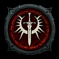

Paladin
Ein geweihter Frontkämpfer, der Schildkampf, heilige Waffen und unterstützende Auren verbindet.
- Kernressource
- Glauben
- Klassenmechanik
- Schwüre und Auren
- Reichweite
- Nah bis mittel
- Schwerpunkt
- Schutz · Vergeltung
Spielweise
Paladine halten die Front, verstärken Verbündete mit Auren und setzen Glauben für ihre Angriffe ein. Schildfertigkeiten, Weihe und heilige Angriffe verbinden Schutz mit offensiver Vergeltung.
Stärken
Darauf solltest du achten
Der Schwerpunkt auf Standfestigkeit wirkt weniger beweglich. Maximale Wirkung entsteht, wenn Aura, Schwur und aktive Fertigkeiten dieselbe Aufgabe unterstützen.
Fertigkeitsfamilien
Schildangriffe und heilige Waffen verbinden Kontrolle mit Nahkampfschaden. Auren wirken dauerhaft auf den Paladin und seine Umgebung; geweihte Zonen schützen Verbündete oder bestrafen Gegner.
Typische Ausrichtungen
Schild-Builds setzen auf Blocken und Vergeltung, heilige Kämpfer auf direkte Lichtangriffe. Aura-Varianten tauschen einen Teil des persönlichen Schadens gegen starke defensive oder offensive Gruppenwirkung.
Schwüre und Auren
Die Klassenmechanik setzt langfristige Schwerpunkte. Entscheidend ist nicht nur, welche Aura aktiv ist, sondern ob Ausrüstung und aktive Fertigkeiten denselben Schwur unterstützen.
Für wen geeignet?
Für Spieler, die einen standfesten Frontkämpfer, Schildkampf und sichtbare Unterstützung für eine Gruppe bevorzugen.